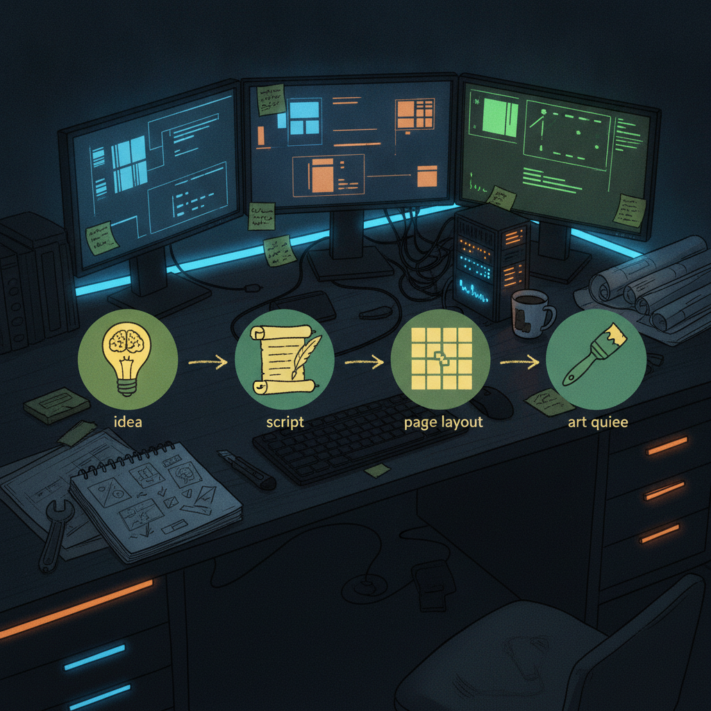

The Banana Lab: Building a Real Production Pipeline for MonkeyZoo Comics
I have been heads down on MonkeyZoo Production Workflow System, the tool I am building to actually run production on my MonkeyZoo comic book series. Not a mood board, not a Notion doc held together with hope. A real workflow app that takes an issue from idea to finished art, with stages, config, and a place to track where everything actually is.
What just shipped
The last 24 hours were a big push. The foundation went in first: a structured production workflow engine, config, character bibles, and an active season plan, plus a Studio design system and a persistent workspace shell to hold it all together. On top of that I integrated the character and story workspaces, added a static GitHub Pages preview so I can look at the app without spinning up a dev server, and cleaned up a chunk of UI polish including a landing page with the actual product story and a getting-started guide.
Then came the rebrand. The app is now The Banana Lab, and with the new name came the real production pipeline pieces: guided issue creation, an issue production dashboard with stage controls, a full story and script generation workspace, a page and panel planning workspace, and, most recently, a panel prompt and art queue workspace. That is the whole loop now: create an issue, write the story, plan the pages and panels, queue up art prompts.
Alongside the feature work I did some housekeeping I am glad is behind me: branch protection and repo validation, a fix to remove unverified production status text so the dashboard only shows data it can actually ground, and a repeatable static sync process for the Pages preview so it does not drift from what I am building.

Why it matters
A comic series has a lot of moving parts: scripts, panel layouts, art direction, character continuity, and knowing which issue is stuck where. Doing that in scattered docs works for a little while and then it does not. Having one system that walks an issue from a guided creation step through story, layout, and art queue means less time re-explaining context to myself and more time actually making pages.
Rick's take
This is the part of building I like best, watching a tool go from "a folder of ideas" to something with real stages and a dashboard that reflects what is actually happening. The rebrand to The Banana Lab happened because the tool earned a name, it stopped being a scaffold and started being a place I want to open every day. The part I am most excited about right now is the panel prompt and art queue workspace, because that is the piece that turns a planned page into something I can actually hand off to art production.
What's next
With story, layout, and art queue workspaces all in place, the natural next step is tightening the connections between them, making sure an issue actually flows cleanly from stage to stage inside the dashboard. I am not going to promise specific dates, but the pipeline shape is there now, and the next round of work is about making it feel solid end to end.